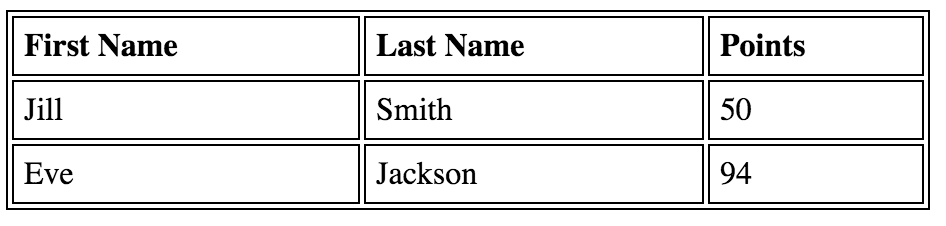

This homework is to have you a chance to apply knowlege and tags that you learned during the WebClient Computing course. The answer should be written in a valid HTML form. You can write answers in Korean. If you have difficulties in understanding the question, please let me know!. Slack or E-mail This homework has to be submitted by . Late submission will be deducted 10% of points per each delayed day - no points after 10 days.
Understanding HTML Concepts
What does HTML stand for? (1 point)
H :Hyper
T :Text
M :Markup
L :Language
Describe difference between Markup language(HTML) and Programming language, such as Java (10 point)
Answer: 마크업랭기지는 자바의 Loop 같은것을 할 수 없음, 아키텍쳐 스트럭쳐를 표현, 무엇으로 뭘하는지만 표현, 다큐먼트의 형태, 기능 등을 표현해주고 실제로 그것의 기능은 없음
예를들어 <red>Web Client</red>는 우리는 web client만 보이지만 실제로는 웹브라우저가 Web client를 red로 읽어드려 빨갛게 표현한다.
Describe what do the following tags mean(4 point)
pre:보이는 그대로표현 스페이스, 엔터 다 포함 이 태그를 쓰지않으면 그냥 한줄로 나옴
p:문단태그 그냥 글쓰는곳 그리고 block타입이다
br: 줄바꿈 태그 엔터의 기능과 동일하다
h1, h2, h3, h4, h5, h6: 해드라인 속성 1부터 6까지는 크기를 나타냄 bold 속성이 들어가 진하게 표기되고 크기는 1이 제일크고 6이 제일작다. 그리고 block 속성을 갖고있다.
Describe diffrence between using strong, em tag and b, i tag (5 point).
Answer: strong과 em은 진하게, 기울임의 의미를 가진다. 시멘틱이라하여 태그에 의미가 부여되어 검색엔진이 이해할 수 있고 검색능력이 향상되게 도와준다. 최근에 자주사용하며 이렇게 변화해가는 추세이다.
반면에 b와i는 strong과 em과 같은 기능을 하지만 의미가 들어있지 않고 단순히 모양과 효과만 잡아주는 형태이다.
In the img tag, describe what alt tag means and how it differs from title attribute(5 point).
Answer: alt는 이미지태그가 이미지를 불러오지 못할때 대체 문구로 예를들어 '이미지를 불러올 수 없음' 이런 문구로 이미지를 대체하는 글자를 나타낸다.
반면에 title은 이미지에대한 이름을 나타낸다. img 태그가 이미지를 불러오고 그위에 마우스를 올려놓았을때 나오는 설명 같은 것이다.
In table, describe difference between th and td (5 point).
Answer: th와 td는 tr안에 생성되는 열의 값이다. 차이점은 th는 속성의 명칭을 나타내는 곳을 지칭한다. 가령, 이름 나이 주소로 구성되어있는 테이블에서 이름 나이 주소 에 th를 쓰고 아래 value값들은 td를 사용한다.
그리고 th는 진하게 표기되며 가운데 정렬을하게된다.
Using HTML Tags
Write a html statement to make a link to http://cs.kookmin.ac.kr where the link string is KMU-CS (5 points) Answer: KMU-CS
Write a html statement to make a link to http://cs.kookmin.ac.kr where the link string is KMU-CS and opens in a new tab (5 points) Answer:KMU-CS
Write a html statement to make a link to http://cs.kookmin.ac.kr where the link shows a smiley.gif image in the figure folder (5 point) Answer:
Make a link to kmu-id paragraph in the begining of this homework (5 point) Answer:처음으로
In the next answer sentence, add extra importance to a string fun. (3 points) Answer: HTML homework is fun
Create a video rendering tag that will automatically play as soon as it is ready, continue to play (loop), and show control bar. video source in the files/movie.mp4 (5 point)
Answer:
Add a PDF file to be rednered on a browser. source file - files/table-quiz.pdf (5 points)
Change the following ordered list to unordered list (2 point)
apple
banana
Change the following ordered list numbering to capital roman character (5 point)
apple
banana
Create an input field that gets 13 digit telephone number (5 point)
Answer: phone :
Create an input field with a radio button to select male and female exclusively (5 points)
Answer: male: female:
Create a submit and cancel button inside a form element (2 points)
Answer:
Create a datetime input format to get date as an input (3 points) Answer:
추가:input태그 하나의 폼으로 합쳐 보았음
Create a following table (5 points)

Answer : 내부스타일을 이용해서 모양잡음
First Name
Last Name
Points
Jill
Smith
50
Eve
Jackson
94
Create a following table - border type does not matter (10 points)
Answer: 내부스타일에서 table2 ID와 lunch부분을 위한 lunch class를 만들어 모양잡음